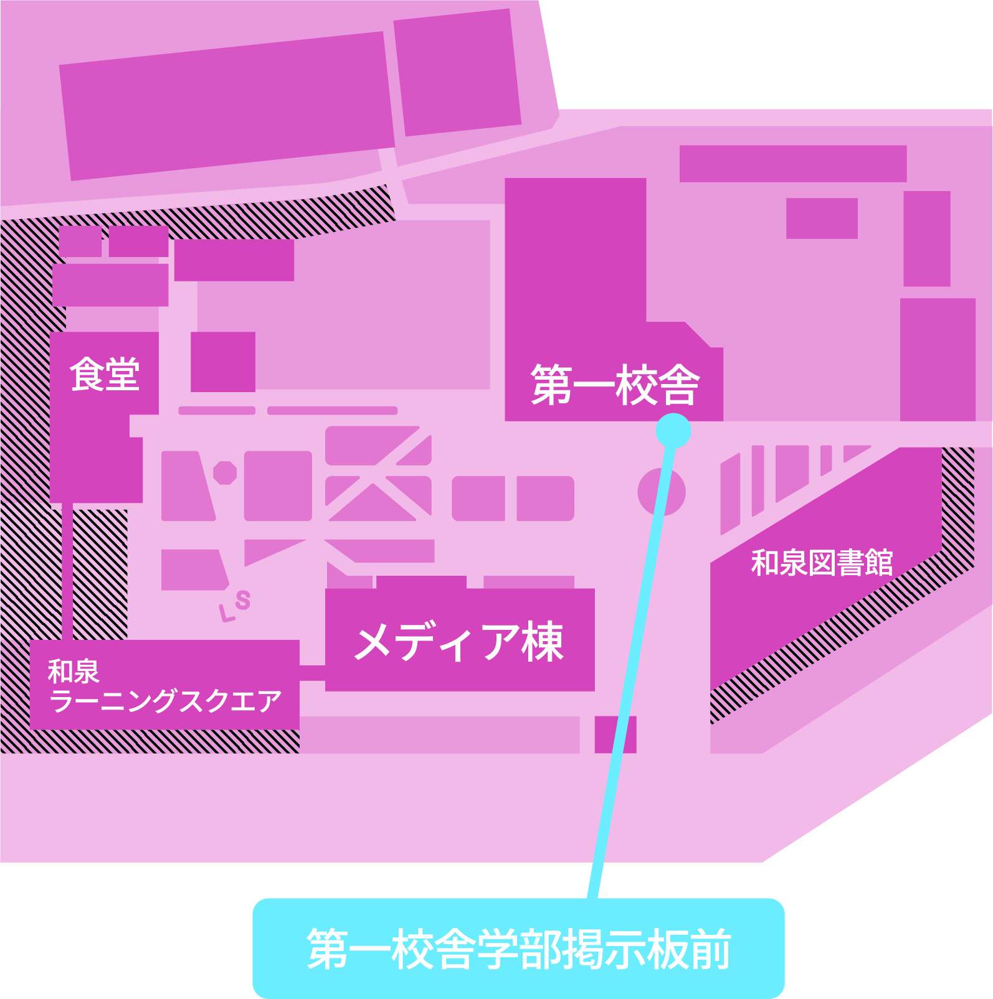

投票が完了しました。
結果発表までしばらくお待ちください。
こちらの投票完了画面が「明大祭大抽選会」にご参加いただける抽選券の引換画面となります。
参加をご希望される方は、総務局の企画受付場所である第一校舎学部掲示板前へお越しください。
詳しくは公式パンフレットp.13をご参照ください。
抽選券の枚数には限りがございます。あらかじめご了承ください。

※会場にいる実行委員が押すボタンですので、押さずに会場までお越しください。